KIRC · RNA-seq: contagens brutas (GDC)
STAR - Counts (GENCODE v36) · gerado em 21/10/2026 22:39
58,9 Mtamanho mediano
0,51dispersão mediana α
17.203genes
534amostras tumorais
72amostras normais
0,0%valores faltantes
Fonte: API do GDC (STAR - Counts)
Principais resultados
- Bibliotecas de 4,6 a 141,1 milhões de leituras (mediana 58,9). 47.028 de 60.660 features têm leitura em pelo menos 10% das amostras.
- A variância cresce bem acima da média: a dispersão mediana da binomial negativa é α=0.51 (para features com média > 10). Isso descarta um modelo Poisson e indica binomial negativa (ou Poisson-lognormal) na verossimilhança.
- A fração de zeros é compatível com a binomial negativa (diferença mediana -1,6%); inflação de zeros não parece necessária.
- Em média 12,3% das leituras de cada amostra vão para as 20 features mais abundantes (MT-CO1, MT-ND4, MT-RNR2).
- Genes codificadores de proteína recebem 96,7% das leituras (mediana).
- 17.203 genes medidos em 606 amostras (534 tumorais e 72 normais); 0,0% dos valores estão faltando.
- Os dois primeiros componentes principais explicam 22,5% e 11,4% da variância das features mais variáveis.
- Correlação mediana entre amostras: 0,66.
- Tumor x normal: 14825 genes diferentes com FDR < 5% (7899 maiores no tumor, 6926 maiores no normal; 72 pacientes têm o par tumor-normal).
- Mais aumentados no tumor: ENSG00000224490.5, ENSG00000149927.18, ENSG00000286025.1, ENSG00000231881.2, ENSG00000256694.1, ENSG00000228271.2, ENSG00000214827.11, ENSG00000142609.18.
- Mais reduzidos no tumor: ENSG00000128918.15, ENSG00000115112.8, ENSG00000111319.13, ENSG00000171714.12, ENSG00000129354.12, ENSG00000153822.14, ENSG00000134121.10, ENSG00000205795.4.
- Associações clínicas com p < 0,05 nos componentes principais: PC1 com estádio (p=0.00049); PC2 com estádio (p=1.7e-11); PC3 com estádio (p=1.5e-05); PC1 com sexo (p=8.1e-06); PC2 com sexo (p=7.3e-06); PC3 com idade (p=0.0071).
Biblioteca
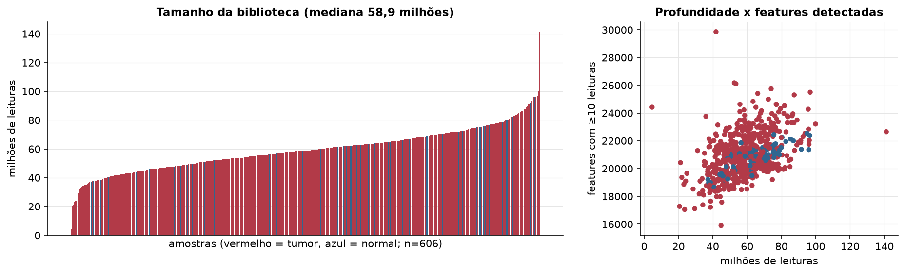
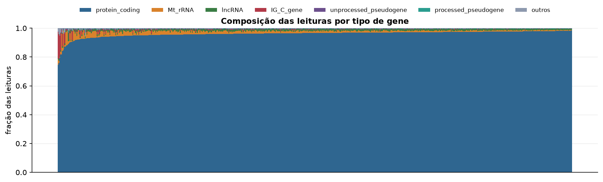
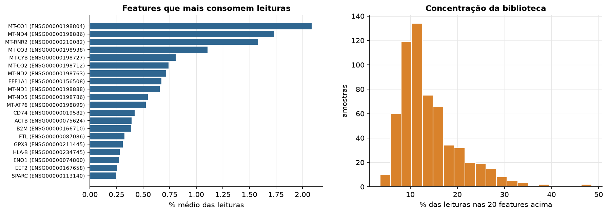
Sobredispersão e zeros
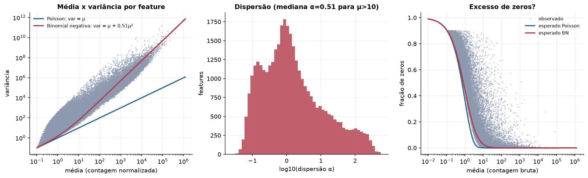
Exploração em log2(CPM+1)
Features com CPM ≥ 1 em pelo menos 20% das amostras (17.203 features).
Distribuição dos valores
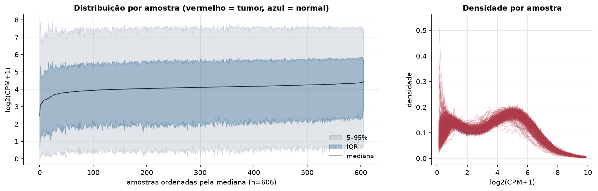
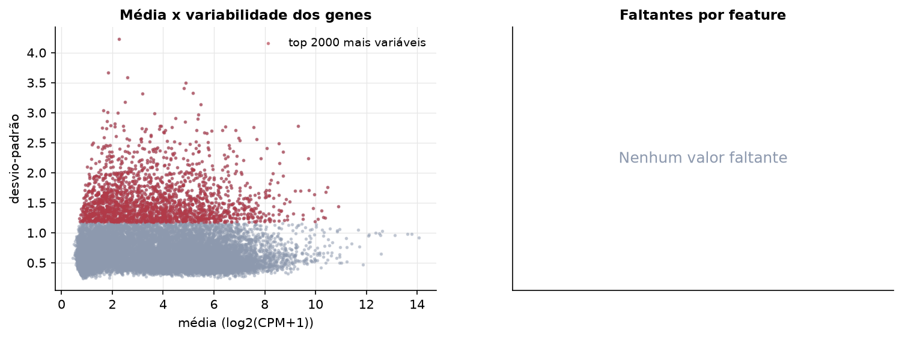
Estrutura das amostras
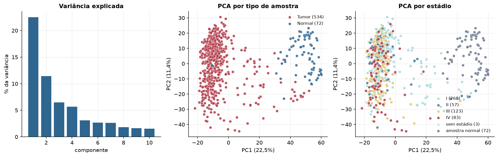
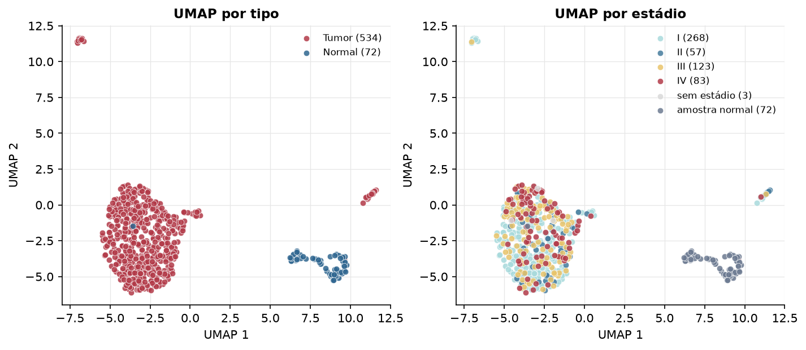
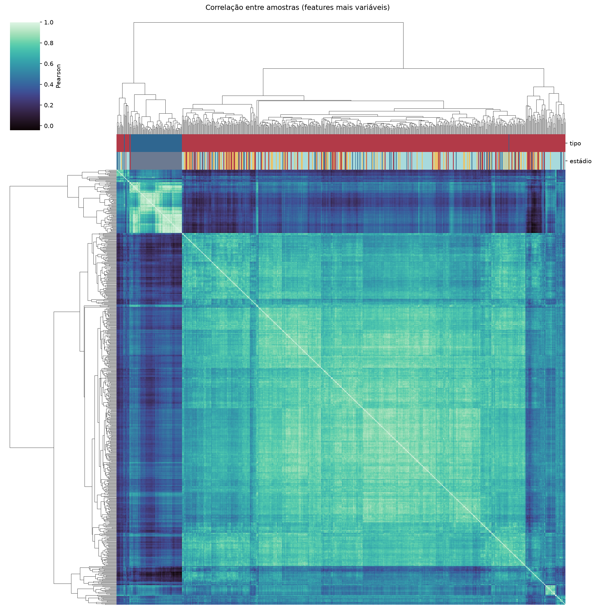
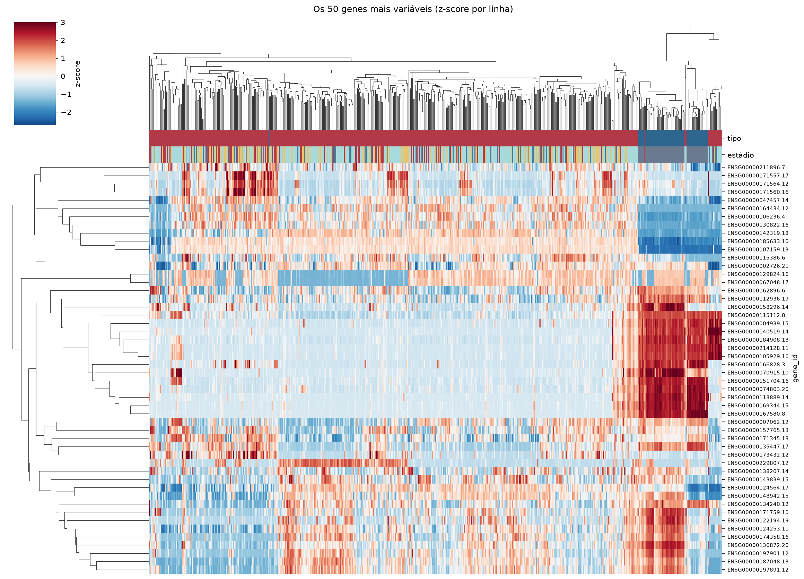
Tumor x normal
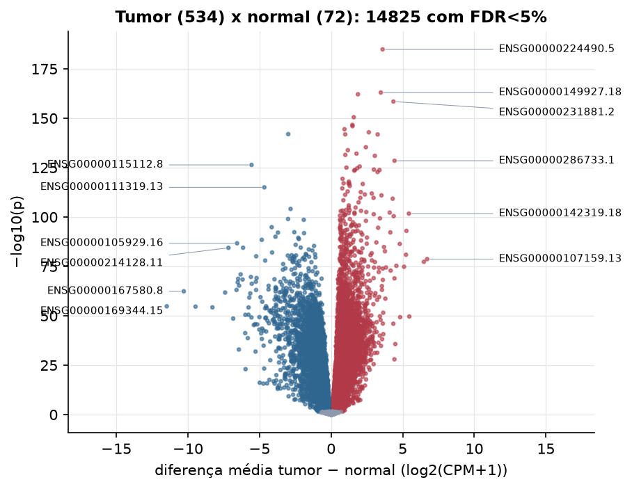
Features mais diferentes entre tumor e normal
| gene_id | diferenca_tumor_menos_normal | t | p | fdr |
|---|---|---|---|---|
| ENSG00000224490.5 | 3.595 | 43.903 | 1.45e-185 | 2.49e-181 |
| ENSG00000149927.18 | 3.47 | 38.806 | 9.8e-164 | 8.43e-160 |
| ENSG00000286025.1 | 1.874 | 39.072 | 7.46e-163 | 4.28e-159 |
| ENSG00000231881.2 | 4.35 | 42.181 | 3.61e-159 | 1.55e-155 |
| ENSG00000256694.1 | 1.583 | 38.129 | 3.04e-151 | 1.04e-147 |
| ENSG00000228271.2 | 1.482 | 35.452 | 2.41e-147 | 6.91e-144 |
| ENSG00000214827.11 | 1.494 | 37.388 | 1.06e-146 | 2.59e-143 |
| ENSG00000142609.18 | 0.933 | 34.794 | 3.63e-145 | 7.8e-142 |
| ENSG00000233695.2 | 2.632 | 38.065 | 1.25e-143 | 2.38e-140 |
| ENSG00000128918.15 | -2.996 | -36.988 | 1.1e-142 | 1.89e-139 |
| ENSG00000233542.2 | 0.984 | 35.403 | 1.51e-142 | 2.36e-139 |
| ENSG00000283683.1 | 3.248 | 39.954 | 1.69e-142 | 2.43e-139 |
| ENSG00000243144.7 | 2.424 | 36.192 | 4.66e-136 | 6.16e-133 |
| ENSG00000125895.5 | 1.166 | 32.544 | 1.5e-134 | 1.85e-131 |
| ENSG00000255750.6 | 1.772 | 32.128 | 8.42e-133 | 9.66e-130 |
| ENSG00000240498.9 | 0.99 | 34.022 | 3.59e-132 | 3.86e-129 |
| ENSG00000188060.7 | 3.051 | 34.393 | 1.11e-131 | 1.12e-128 |
| ENSG00000286733.1 | 4.427 | 44.514 | 3.33e-129 | 3.18e-126 |
| ENSG00000115112.8 | -5.559 | -46.189 | 4.34e-127 | 3.93e-124 |
| ENSG00000176887.7 | 1.993 | 31.256 | 2.69e-126 | 2.31e-123 |
| ENSG00000225383.8 | 1.069 | 30.794 | 9.82e-126 | 8.05e-123 |
| ENSG00000287560.1 | 1.824 | 31.195 | 2.1e-125 | 1.64e-122 |
| ENSG00000258667.2 | 2.987 | 37.333 | 9.68e-125 | 7.24e-122 |
| ENSG00000256540.1 | 1.661 | 35.081 | 1.59e-124 | 1.14e-121 |
| ENSG00000088340.17 | 3.378 | 37.044 | 1.7e-124 | 1.17e-121 |
| ENSG00000256234.1 | 1.611 | 30.682 | 3.11e-124 | 2.06e-121 |
| ENSG00000255774.2 | 3.241 | 31.597 | 1.75e-123 | 1.12e-120 |
| ENSG00000254481.1 | 0.798 | 30.41 | 4.68e-120 | 2.87e-117 |
| ENSG00000236064.2 | 1.237 | 29.53 | 1.21e-118 | 7.17e-116 |
| ENSG00000259236.1 | 0.873 | 29.457 | 8.6e-118 | 4.93e-115 |
Associação com variáveis clínicas
p-valores da associação dos três primeiros componentes principais (só tumores) com estádio (Kruskal-Wallis), sexo (Mann-Whitney), idade (Spearman) e sobrevida global (Cox univariado).
| estádio (Kruskal) | sexo (Mann-Whitney) | idade (Spearman) | sobrevida OS (Cox) | |
|---|---|---|---|---|
| PC1 (14,5%) | 0.000494 | 8.12e-06 | 0.53 | 4.35e-06 |
| PC2 (11,3%) | 1.72e-11 | 7.3e-06 | 0.981 | 5.93e-08 |
| PC3 (7,0%) | 1.51e-05 | 0.807 | 0.007 | 0.005 |